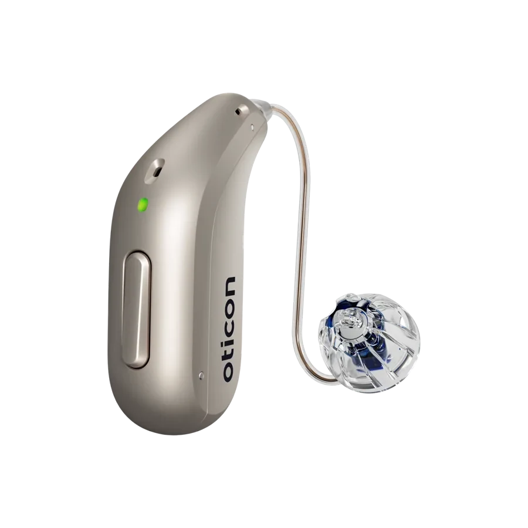
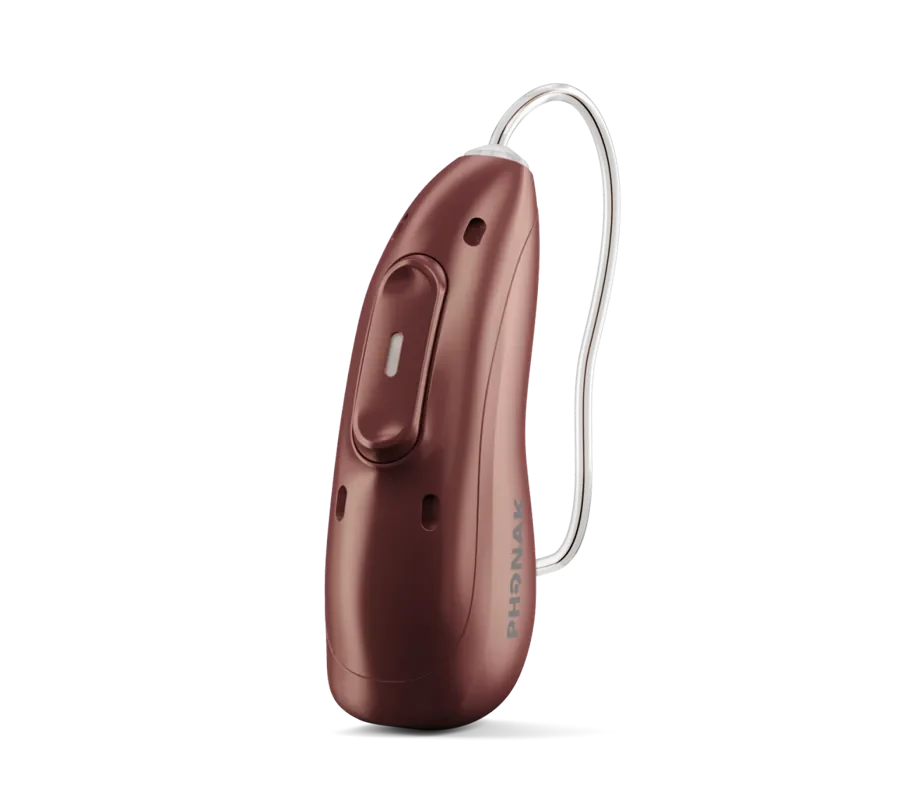
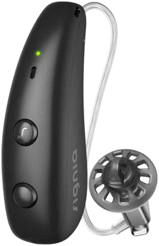
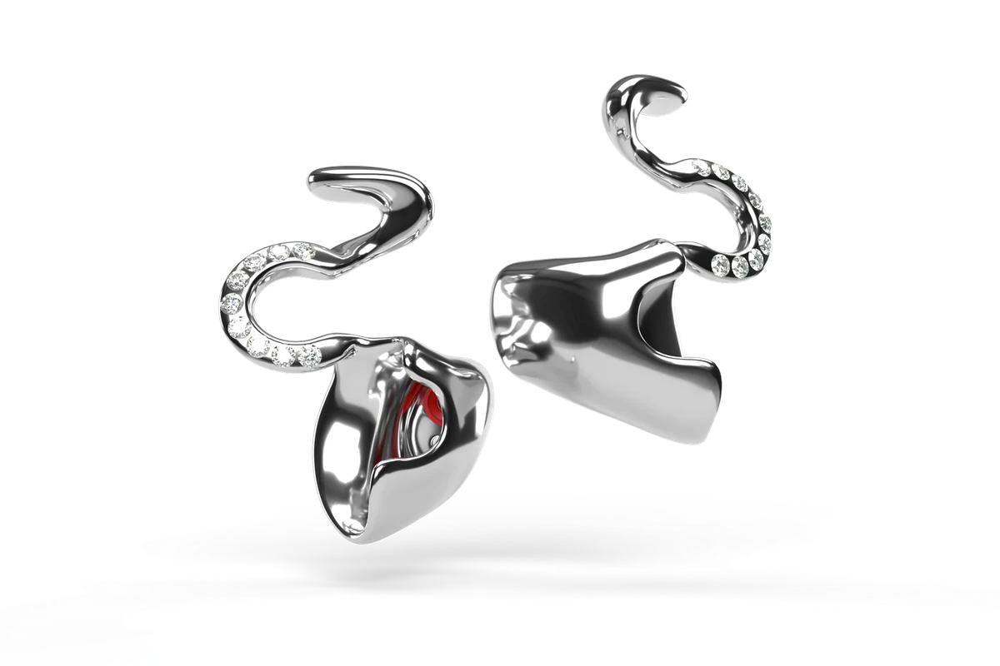
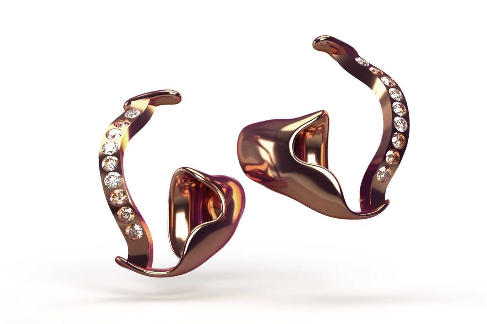
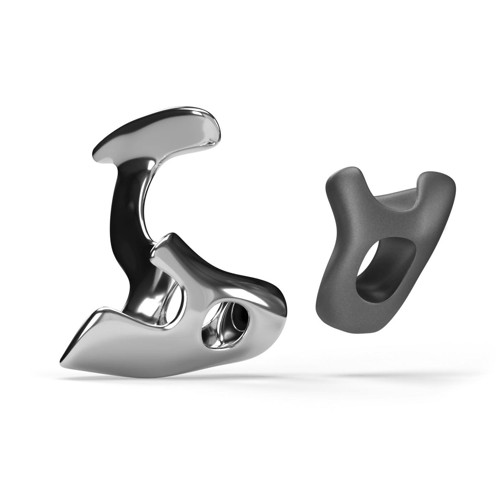
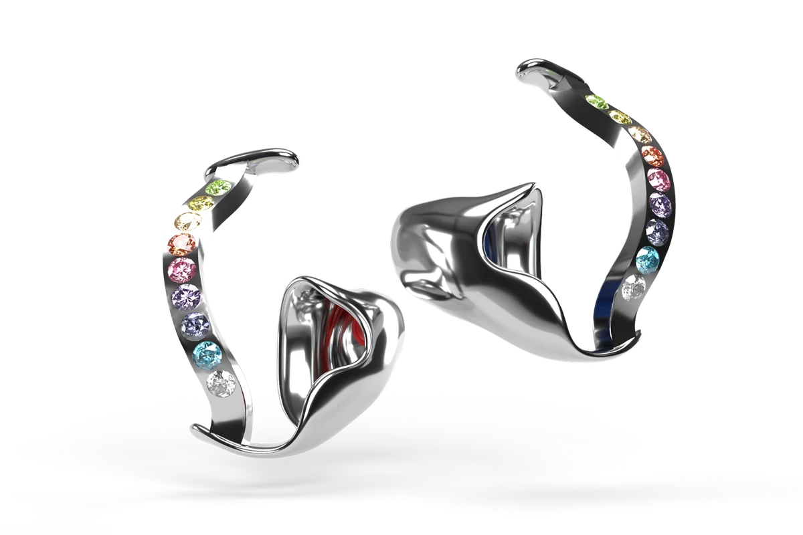
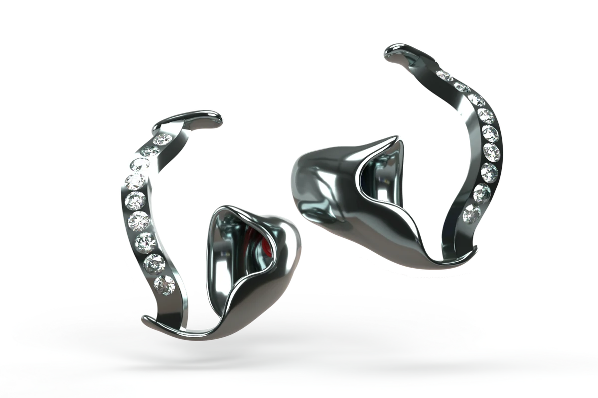

Herstellerangaben, jeweils höchste Ausstattungsstufe

Herstellerangaben, jeweils höchste Ausstattungsstufe

Herstellerangaben, jeweils höchste Ausstattungsstufe
Genauso wichtig wie das Gerät selbst ist die Anpassung an Ihre persönliche Klangwelt. Ohne sie bleibt auch ein sehr gutes Hörgerät hinter seinen Möglichkeiten.
Wir informieren und hören zu – bevor wir messen.
von Anfang an
weniger Einstellungstermine
im Alltag spürbar
Kein Filialist, keine Herstellerbindung – ein Fachgeschäft aus Köln.
Für alle, für die Hören mehr ist als Sprache: Musikliebhaber, HiFi-Hörer, Musiker.
Ihre individuelle Lautheit mit trueLOUDNESS – statt Standardformel
Hörsessions mit Ihren eigenen Referenzaufnahmen
Feinjustierung an Ihrer Anlage – persönlich oder per Fernanpassung
Hersteller, bei denen Musik ganz oben steht
Auf Basis der Forschung des Hörzentrums Oldenburg: Wir messen nicht nur Ihre Hörschwelle, sondern wie laut Sie Klänge tatsächlich empfinden.
Ihre individuelle Lautheit als Bild – die Grundlage für eine präzise Feinanpassung statt Einstellen nach Gefühl.
trueLOUDNESS und RevoLoud – bei uns in Köln-Lindenthal.
Vom Abdruck bis zum fertigen Stück – in unserer eigenen Werkstatt.
diskret und kaum sichtbar
angenehm auch bei langer Tragedauer
die eigene Stimme klingt natürlich
nach Ihrem individuellen Abdruck
passend zu Hörgerät und Hörverlust
Materialien auch für empfindliche Ohren
Design- und Schmuck-Otoplastiken aus Titan: hypoallergen, leicht und formstabil – mit Steinen, poliert oder matt.





Für ruhige Nächte – angenehm auch in Seitenlage.
Musikgenuss ohne Reue: Lineare Filter dämpfen gleichmäßig, der Klang bleibt unverfälscht.
Wasserdichter Schutz nach Maß – gegen das Schwimmerohr.
Dämpft Wind und Lärm, lässt Verkehr und Gespräche durch.